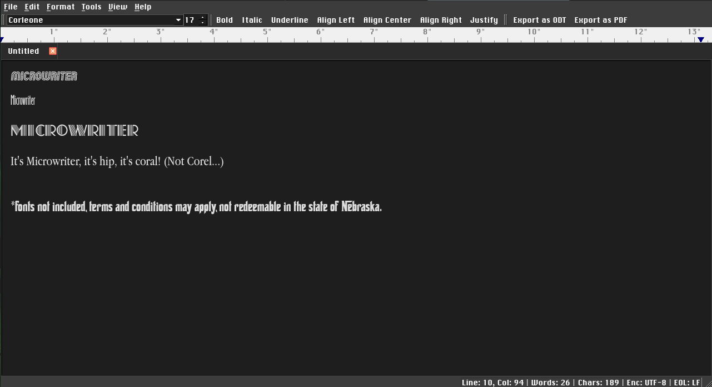
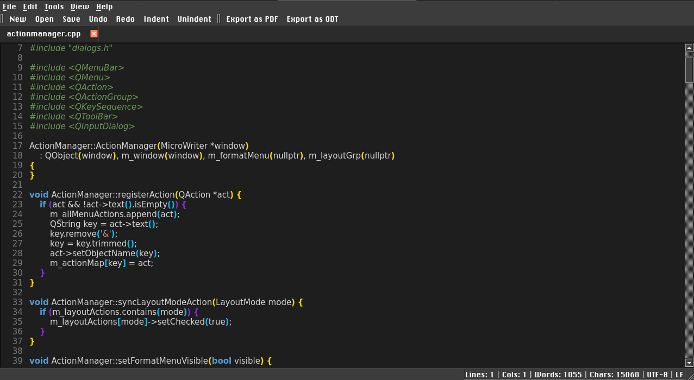
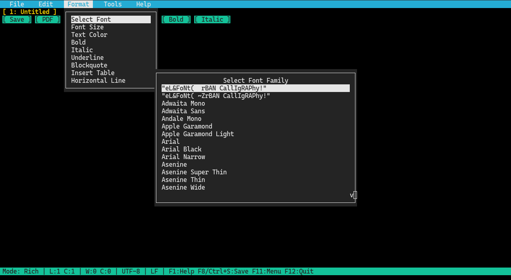

MicroWriter
The diet soda of word processors, same refreshing taste, half the calories!
Version 3.0, released on October 31st, 2026
A lightweight, distraction-free rich text editor and code notepad built with C++ and Qt. MicroWriter combines the simplicity of a classic notepad with essential word processing tools, multi-tab editing, and versatile document export capabilities.
  
Features
- Multi-Tab Interface: Work on multiple documents simultaneously with per-tab layout memory.
- Rich Text Formatting: Bold, italic, underline, strikethrough, text color, highlight color, font family, and font size.
- Three Layout Modes: Switch seamlessly between Normal, Print, and Code Layout modes.
- Dedicated Code Mode: Clean code editor with line numbering, bracket matching, syntax highlighting, and auto-detection for common source files.
- Safety Lockout: Prevents a user from accidentally switching to rich text edit mode while working on source files.
- Context-Aware Menus: The Format menu automatically hides while working in Code Layout to keep the workspace clean and focused.
- Dual-Profile Customizable Toolbars: Separate, persistent toolbar setups for Rich Text and Code modes—right-click any toolbar to customize buttons, create new stacked rows, or remove bars.
- Universal Find and Replace: Fast text and regex search with match replacement across both rich text and code editors.
- Document Ruler: Visual interactive ruler for margins and tabs.
- Live Statistics: Real-time character count, word count, line/column tracking, encoding display, and newline mode detection (CRLF, LF, CR).
- Dark Mode Support: Clean light and dark theme toggling.
- Multi-Format Support: Supports HTML as it's primary format. It can convert markdown to html when saved as HTML. All other formats are opened directly into Code Layout mode.
doc2html is an included extra for converting docx, doc and rtf to html format, it requires libzip and libxml to build.
Keyboard Shortcuts for the Qt6 GUI
File Operations
|
Shortcut |
Action |
|
`Ctrl + N` |
**New tab / document** |
|
`Ctrl + O` |
**Open file** |
|
`Ctrl + S` |
**Save current file** |
|
`Ctrl + Shift + S` |
**Save As** |
|
`Ctrl + W` |
**Close active tab** |
|
`Ctrl + P` |
**Print document** |
|
`Ctrl + Q` |
**Exit MicroWriter** |
Editing & Navigation
|
Shortcut |
Action |
|
`Ctrl + Z` |
**Undo** |
|
`Ctrl + Y` / `Ctrl + Shift + Z` |
**Redo** |
|
`Ctrl + X` |
**Cut** |
|
`Ctrl + C` |
**Copy** |
|
`Ctrl + V` |
**Paste** |
|
`Ctrl + A` |
**Select all text** |
|
`Ctrl + F` |
**Find and Replace** |
|
`Alt + Q` |
**Next Tab** |
View & Layout Modes
|
Shortcut |
Action |
|
`Ctrl + 1` |
**Normal Layout** |
|
`Ctrl + 2` |
**Print Layout** |
|
`Ctrl + 3` |
**Code Layout** |
Text Formatting (Rich Text Modes)
|
Shortcut |
Action |
|
`Ctrl + B` |
**Bold** |
|
`Ctrl + I` |
**Italic** |
|
`Ctrl + U` |
**Underline** |
|
`Ctrl + Shift + X` |
**Strikethrough** |
|
`Ctrl + L` |
**Align Left** |
|
`Ctrl + E` |
**Align Center** |
|
`Ctrl + R` |
**Align Right** |
|
`Ctrl + J` |
**Justify** |
Keyboard Shortcuts for the NCurses TUI
Function Key System (F1 – F12)
|
Shortcut |
Action |
|
**F1** |
**Help & About Dialog** |
|
**F2** |
**New Tab / Document** |
|
**F3** |
**Cycle Through Tabs** |
|
**F4** |
**Find & Replace (Regex / Plain Text)** |
|
**F5** |
**Switch to Rich Text Layout** |
|
**F6** |
**Switch to Code Layout** |
|
**F7** |
**Open File Dialog** |
|
**F8** |
**Save Current File** |
|
**F9** |
**Aspell Spelling Correction Dialog** |
|
**F10** |
**Export Document as ODF** |
|
**F11** |
**Activate Dropdown Menu Bar** |
|
**F12** |
**Quit / Exit MicroWriter** |
File & App Operations
|
Shortcut |
Action |
|
**Ctrl + S** |
**Save Current File (Flashes Save indicator)** |
|
**Ctrl + Q** |
**Quit / Exit MicroWriter (Checks for unsaved changes)** |
|
**Ctrl + F** |
**Find/Replace** |
|
**Ctrl + O** |
**Open File** |
Editing & Clipboard
|
Shortcut |
Action |
|
**Ctrl + X** |
**Cut Selection / Line (Syncs to system clipboard)** |
|
**Ctrl + C** |
**Copy Selection / Line (Syncs to system clipboard)** |
|
**Ctrl + V** |
**Paste (Reads from system clipboard: wl-paste / xclip)** |
|
**Ctrl + D** |
**Nano-style Cut Entire Line** |
|
**Ctrl + A** |
**Select All Text** |
|
**Ctrl + E / Ctrl + Z** |
**Undo** |
|
**Ctrl + R** |
**Redo** |
|
**Tab** |
**Indent 4 Spaces / Block Indent Selection** |
|
*Shift + Tab (Backtab)* |
**Unindent Line / Selection** |
Navigation & Dialogs
|
Shortcut |
Action |
|
**Arrows** |
**Navigate cursor** |
|
**PgUp / PgDn** |
**Scroll page up / down** |
|
**Home / End** |
**Jump to line start / end** |
|
**Esc** |
**Cancel active prompt, cheat sheet, or menu** |
Mouse Actions
|
Mouse Event |
Target |
Action |
|
**Click** |
**Menu Bar (Row 0)** |
**Open dropdown menus** |
|
**Click** |
**Tab Bar (Row 1)** |
**Switch active tab** |
|
**Double-Click** |
**Tab Bar (Row 1)** |
**Create new tab** |
|
**Right-Click** |
**Tab (Row 1)** |
**Tab Context Menu (Save, Close, Save & Close)** |
|
**Click** |
**Toolbar (Row 2)** |
**Quick actions (Save, PDF, Open, Formatting, Comments)** |
|
**Click / Drag** |
**Content Area** |
**Position cursor or create text selection** |
|
**Click** |
**Gutter (Code Mode)** |
**Select entire line** |
|
**Mouse Wheel** |
**Editor / Dialogs** |
**Scroll document viewport or modal lists smoothly** |
Build Requirements
- C++17 compatible compiler (GCC or Clang)
- CMake 3.16 or higher
- ncurses library (with wide-character/mouse support)
- fontconfig (recommended for full system font discovery)
- wl-clipboard (wl-copy/wl-paste) or xclip / xsel (for external clipboard integration)
- Qt 6 (Core, Gui, Widgets, PrintSupport - for shared build target)
Build Commands
```bash
mkdir build && cd build
cmake ..
cmake --build .
Launch directly into the console TUI or force code editing mode:
microwriter -c [file1] [file2] ...
microwriter --console [file1] [file2] ...
Launch directly in Code Layout mode
microwriter -C [file1] [file2] ...
microwriter --code [file1] [file2] ... |